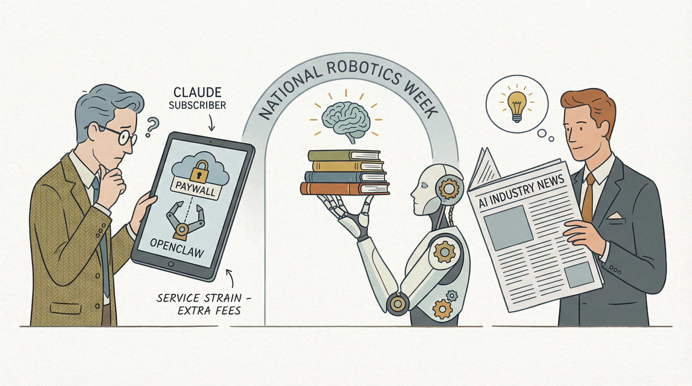

Anthropic停止支持OpenClaw平台，影响Claude订阅用户
两克伴AIGC日报
2026-04-05 星期日

本期关注：Anthropic终止Claude的OpenClaw支持，Meta秘密硬件项目招募新团队，Vektor推出本地优先AI记忆库，research-llm-apis更新解决LLM新功能兼容性，TurboQuant在Gemma 4上取得显著量化效果。
📰 行业动态
Meta招聘新团队领导秘密硬件项目，探索新型AI设备
🔥 今日焦点
Vektor是一款基于SQLite的本地优先关联记忆库，专为AI代理设计。它通过MAGMA图实现四层内存结构，并采用AUDN循环（添加、更新、删除、无操作）进行内容管理。此外，Vektor还引入了REM背景压缩技术，并集成了Claude工具，确保了系统的性能和效率。
Vektor的重要性在于其独特的本地优先设计，无需依赖云端服务，有效保护了数据安全和隐私。这对于AI领域来说具有重要意义，尤其是在数据安全和隐私保护日益受到重视的当下，Vektor为AI应用提供了更加可靠的选择。
近日，知名AI开发者Simon Willison发布了其LLM Python库和CLI工具的重大更新——research-llm-apis 2026-04-04。该更新旨在解决现有抽象层无法处理部分LLM新功能的问题，如服务器端工具执行。
LLM库通过插件系统，为用户提供了一个跨越数十家厂商、数百种不同LLM的抽象层。然而，在过去一年中，一些厂商推出了新的功能，如服务器端工具执行，使得LLM的抽象层无法适应。为了解决这一问题，Simon Willison让Claude Code阅读了Anthropic、OpenAI、Gemini和Mistral的Python客户端库，并利用这些库生成curl命令，以访问不同场景下的原始JSON数据（包括流式和非流式模式）。
近日，Reddit用户u/Fearless-Wear8100在Gemma 4 26B A4B-it Q4_K_M模型上对TurboQuant KV缓存量化进行了实验，结果显示令人惊喜。在Gemma 4上，QJL表现良好，而FWHT作为结构化旋转替代品，也适用于大型注意力头（dk=256/512）。实验结果显示，在质量测试中，tq3j/q4_0达到了37/37的准确率，NIAH测试中达到8/8，且相较于q4_0/q4_0，速度提升了34%，从4K上下文开始，TurboQuant超越了q4_0。在此配置下，每K通道约3.1比特的量化接近零精度损失，同时实现了显著的长上下文速度提升。这一发现不仅优于目前公开的Gemma 4分支结果，也展示了TurboQuant在AI量化技术上的潜力，对AI领域的高效计算和模型压缩具有重要意义。
---
在网络安全领域，一场从“人与人的对抗”向“智能体与智能体的对抗”的转变正在悄然发生。近日，一篇名为《锤爆苹果壁垒：AI成最强攻城锤》的文章揭示了这一趋势。文章指出，随着人工智能技术的飞速发展，AI已逐渐成为网络安全领域中最强大的攻城锤。
这一转变的重要性不言而喻。首先，AI的加入使得网络安全对抗更加复杂和激烈，对传统安全防御提出了更高的要求。其次，AI在识别、分析和防御网络攻击方面展现出前所未有的能力，有望为网络安全带来革命性的突破。此外，AI的应用还能有效降低人力成本，提高安全防护效率。
📚 深度长文
本文介绍了名为“scan-for-secrets 0.1”的Python扫描工具，旨在帮助开发者识别并防范API密钥等敏感信息在日志文件中的意外泄露。作者Simon W.在发布本地Claude Code会话记录时，担心API密钥等机密信息可能在不经意间被详细日志文件暴露。为此，他开发了这款工具，通过扫描指定目录，检测并识别包含敏感信息的文本，包括常见的编码形式，如转义字符或JSON编码。
该工具的核心观点在于，通过自动化扫描，可以有效降低敏感信息泄露的风险，保障数据安全。其关键论据在于，工具不仅能够识别直接的敏感信息，还能识别其常见编码形式，从而提高检测的全面性和准确性。
本文由Ruben Hassid撰写，探讨了为何在人工智能时代，我们必须向AI求证自己的正确性。文章核心观点在于，随着AI技术的飞速发展，人类在知识获取和判断方面越来越依赖AI，但同时也面临着AI可能带来的误导风险。作者通过分析AI在信息处理、逻辑推理等方面的局限性，强调了在决策过程中，向AI求证的重要性。
文章的关键论据包括：首先，AI在处理海量数据时，可能存在偏差和错误；其次，AI的算法和模型并非完美，可能存在漏洞；最后，人类的主观判断和经验在许多情况下仍具有不可替代的价值。基于这些论据，作者呼吁人们在面对AI提供的信息和结论时，要保持批判性思维，主动向AI求证，以确保决策的正确性。
《scan-for-secrets 0.2》一文介绍了scan-for-secrets工具的最新版本更新。该工具是一款针对目录和文件进行敏感信息检测的CLI工具，旨在帮助用户发现潜在的安全风险。本次更新主要聚焦于性能优化和功能扩展。
核心观点在于，新版本通过改进结果流式处理，实现了对大型目录的高效扫描。关键论据包括：
🛠️ 产品推荐
Yoink是一款Claude Code插件，通过重新实现实际使用的函数，简化代码库中的复杂依赖。其三步工作流程包括：克隆目标仓库并构建替代包、生成测试以验证原始期望、根据“保留基础原语”等原则确定依赖项。Yoink有效减少供应链攻击风险，提升代码安全性和效率，适用于技术从业者。
---
Show HN: Signals – Signals是一款由Katanemo Labs（DigitalOcean公司）研发的智能产品，旨在解决构建智能代理系统时，大量代理轨迹难以逐一审查的问题。该产品通过轻量级计算，从实时代理交互中提取结构化“信号”，帮助用户快速识别最有信息量的代理轨迹，有效降低人力成本，提高工作效率。Signals具备强大的AI能力，创新性地实现了对代理系统性能的智能评估，为技术从业者提供高效、便捷的解决方案。
---
Starframer.com 是一款基于 Astro、Headless Shopify 和 Gelato 的在线编辑平台。该平台的核心功能是提供灵活的模板编辑工具，用户可轻松创建个性化内容。通过整合 Astro 和 Headless Shopify，Starframer.com 实现了高效的内容管理和发布，极大地提升了用户体验。对于希望快速搭建网站或展示个人作品的用户，Starframer.com 可有效解决设计、开发难题，节省时间和成本。此外，平台支持广告投放，为用户提供更多盈利机会。